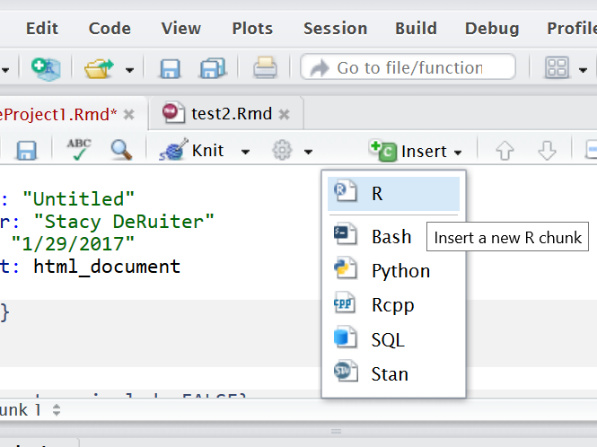
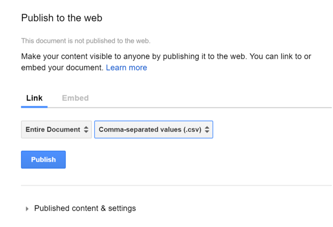
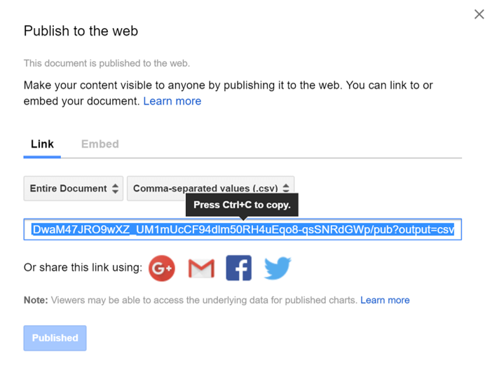

library(mosaic)3 Using Quarto
3.1 Instructions
While you work through this chapter, you will create a Quarto (.qmd) document.
Quarto lets you combine R code, output, and text in a single document that can be rendered in HTML, PDF, Word and more formats.
It’s like magic: you save all your text and R code in a simple file; when you’re ready, push a button and it’s compiled into an output document with nicely formatted text, code (optional to include, but for this class you always will), and all the figures and tables generated by your code.
Since all the data analysis and results are automatically included in the compiled output document, your work is reproducible and it’s easy to re-do analysis if the data change, or if a mistake is uncovered.
3.2 Reference Materials
For more details on using Quarto, and detailed documentation, see https://Quarto.org/docs/guide/.
Quarto and posit also provide substantial resources for learners. This tutorial is tailored to our course, including just the stuff you need and not much you won’t use frequently. But if you want even more about Quarto, you might check out:
- Tutorials for beginners at https://Quarto.org/docs/get-started/hello/rstudio.html (Hello, Quarto! and Computations are most relevant.)
- Detailed documentation at https://Quarto.org/docs/guide/.
Optional Video
If you love video introductions, consider also this 23-minute offering from posit and Mine Cetinkaya-Rundel:
3.3 Logistics
To create a .qmd file, you will have to work in RStudio (outside this tutorial environment). So, as you work on this tutorial, you will probably switch back and forth between the tutorial itself and an RStudio session on your computer or on the server at https://r.stem.calvin.edu (or if not at Calvin, at posit.cloud).
Historical Note: The precursor of the Quarto document is the Rmarkdown (.rmd) document (and even older - the Sweave document). If you know and love one of those, you may use it, but probably best to upgrade to Quarto, which is superceding them.
3.4 Getting Started
Logging in to RStudio
Log in to your account at https://r.stem.calvin.edu (or if not at Calvin, at posit.cloud).
Or, if you installed R on your own machine, open RStudio.
Panels
When you open RStudio, you will see at least three different panels: The Console is on the left. On the upper right are Environment, History and maybe more; on the lower right are Files, Plots, and Packages. Explore a little to try to see what is there!
Files shows you the files saved in your personal space on the server. You can organize, upload, and delete files and folders.
Executing code in R
You can do things in R by typing commands in the Console panel.
However, working that way makes it hard to keep a record of your work (and hard to redo things if anything changes or if a mistake was made).
For this class, you will instead work in Quarto files, which can contain text, R code, and R output (such as figures).
After you have opened a file (like an RMarkdown file) on the RStudio server, the Console panel will be on the lower left and the newly opened file will be on the top left. Let’s learn how to do it…
3.5 Quarto (qmd) Files
Quarto files are stand-alone!
Every Quarto file (qmd file) must be completely stand-alone. It doesn’t share any information with the Console or the Environment that you see in your RStudio session. All R code that you need to do whatever you are trying to do must be included in the qmd file itself!
For example, if you use the point-and-click user interface in the RStudio Environment tab to import a data file, that dataset will not be available when rendering your qmd file.
Similarly, if you load the mosaic package by typing in the Console window,
mosaic functions and data will not be available to use within the qmd file.
So: Keep your qmd files stand-alone! (You have no choice, actually…)
Create a Quarto file
In RStudio, navigate to File -> New File -> Quarto Document…, or click on the white rectangle with a green circle+ :
and select Quarto from the drop-down menu.
Choose html or pdf output.
(Why not Word? Too much temptation to make changes and do formatting after the fact in Word…which makes your work no-longer-reproducible. In qmd, you have documented everything you’ve done. If you make changes after rendering to Word, that’s not true anymore.)
Save your qmd file
Save your file by clicking on the disk icon at the top of the file tab (give it a clear file name like deruiter_quarto_practice.qmd).
Do your best to avoid spaces and special characters in your file names.
If on a server, the file will be saved to the cloud, not to your computer.
All your files will be accessible in the RStudio Files tab (lower right panel) whenever you log into RStudio, regardless of which computer you are using. You may organize them into directories (folders) if you want.
Render!
How do qmd files actually work? What’s so cool about them?
Click on the fat blue arrow next to the word “Render” at the top of the file window.
Check out the rendered html or pdf result, and compare it to the original Quarto file.
Wow!
Source vs. Visual Editor
Look to the upper right corner of your qmd file. You should see some buttons that allow you to toggle between “Source” and “Visual” editor modes.
In your own file, toggle back and forth a few times. The Source mode lets you see (and type) the straight-up markdown – which is probably nice if you’re already used to it, and annoying or mystifying if not. The Visual mode is more of a what-you-see-is-what-you-get (like the rendered version), point-and-click type interface. You may use whichever you prefer.
Be aware that if you are going to copy/paste between documents, you probably want to do so in Source mode.
Personalize your Markdown file
At the top of the Quarto file, there is a section called the “YAML header”. It starts and ends with 3 dashes - - -.
In this part of the file, be very careful what you type: a stray space or character will lead to an error.
This is where you can enter an appropriate title, author(s), and date (within the quotation marks). You can also choose the format you want to render to (usually pdf or html – not in quotes).
Customize your YAML header in your own Quarto doc, and then render again to see the effect.
Make sure you do this for every assignment! (No prof or boss likes getting submissions called “Untitled”…)
3.6 Quarto YAML settings
PDF or html?
For our course, you can choose to render to either an html file or a PDF file.
So, you’ll have either format: pdf or format: html in your YAML header. You can also try format: typst to render PDF files a bit faster (learn more about typst output format online).
But if you choose html, there’s an important change you have to make to the YAML header to ensure your html file is stand-alone. Meaning: you want all images, etc. to be embedded in the one file rather than stored in an accompanying folder. Otherwise, when you (say) upload the file on Moodle or email it, all the images and graphs will be omitted…yikes! Yes, embedding these makes the file larger, but if you are sharing the rendered html document, you need to.
If rendering to html, it is essential that you specify the setting embed-resources: true!
So, make sure you add embed-resources: true after the entry format: html: in your YAML header, exactly as shown below.
Make sure to keep the spacing and line breaks just as shown.
The indents are each two spaces, so there are 2 spaces before html: and 4 before embed-resources:.
Code tools
Note that the YAML header shown above also had a second option activated for rendered html files: code-tools: true.
What does this one do?
It adds a button “Code” at the top right of your file.
If you click it, you can view and copy the source code (basically, the contents of the original qmd file before rendering). This is not a bad option, for example for homework, as it allows me to see every detail of the settings you used and may help me troubleshoot any issues.
3.7 Text and Code in Quarto
Text
The Quarto file is where you save all the R commands you want to use, plus any text commenting on the work you are doing and the results you get. Parts of the file with a plain white background are normal text.
You can format the text. For example, enclosing a word in asterisks will generate italics, so *my text* in the qmd file will become my text in the PDF. Using two asterisks instead of one will generate boldface, so **my text** becomes my text. You can also make bulleted lists, numbered lists, section headers, and more. For example,
#### Some Text
becomes
Some Text
(a sub-section header). Fewer hashtags make the text even larger, and more make it smaller.
Caution! Forgetting the space after the last hashtag will format your text verbatim rather than as a header (#fail). Failing to leave a blank line before the header can also make formatting fail.
Check out the Quarto Markdown Basics reference at https://quarto.org/docs/authoring/markdown-basics.html for more examples of how to format text in Quarto.
Before moving on, try a few of the tricks you just learned in your qmd file. Make it pretty!
qmd file anatomy: R code chunks
An qmd file can (of course!) contain one or more R code chunks. These sections of the file have a grey background onscreen. In Source mode, each one begins with
```{r}
and ends with
```
like so:
In Visual mode you can’t see the `:
How to add a new R code chunk to your file
To add a code chunk to your file in Source editor mode, you have three options.
- You can type in the header and footer by hand to start and end the chunk.
- You can click on the “add chunk” button at the top right. It’s a green box with the C inside (at the top of the qmd file; choose the first option, “R”, in the pulldown) to insert an empty chunk.
- You can use a keyboard shortcut: Windows, Ctrl + Alt + I or OS X, Cmd + Option + I
When you click the Render button, code in code chunks will be run, and any output will be included in the document.

Setup Chunk
Consider using the first R code chunk in a qmd file to specify settings (for graphics, display, etc.). In this chunk, you can also give R permission to use certain packages (software toolkits) with
library(packagename) For example, we will use the ggformula package for graphics. So, verify that the first R code chunk in your file includes the line library(ggformula).
You can also specify options for each R code chunk - these go at the top, prefaced by #|. A typical setup chunk for our course might look like:
Notice that several packages are loaded (that we will use frequently). theme_set() is used to specify some settings for graph output, and knitr::opts_chunk$set() is used to specify whether or not to include R code in the rendered file (Yes please: use echo: true!) and specify the default figure size.
There are tons more options and settings, and you can explore them at https://yihui.org/renderr/options/#chunk-options.
But for now, if you use something like the setup chunk shown above, it should work well and have what you need for almost all work in this course.
The settings chunk is invisible!
If you look carefully at the rendered output, you will see that the setup chunk does not appear there. That’s intentional - when you load packages with library(), they often print a lot of long and pretty useless messages, which you want to omit from your rendered document.
This is achieved by having the setting include: false
However, for our course, no chunk other than the setup chunk should have the setting “include: false” (or echo: false for that matter). Generally, anyone evaluating your coursework needs to see all the code you used, not just its output.
Clean Up
At this point, you probably want to get rid of all the extra content in the template.
If you haven’t put a setup chunk into your own qmd file…do it now! Here’s another reminder of how it would look:
Next, Delete everything in the file other than the YAML header and your setup R code chunk.
Now the clutter is gone and you have space to include your own R code and text.
(Before going further, make sure it still renders.)
3.8 Run R Code
There are multiple ways to run and test R code from a markdown file. Sometimes you want to render the whole file and get the PDF or HTML; other times you want to run just a specific bit of code to make sure it’s working correctly.
Running R Code from a qmd file: Render the file
Every time you render the file, all R code will be run automatically.
A side note: PDF or HTML? Which is preferable?
I think PDFs are a little more portable and a good default option, and their formatting is best for anything you are going to print out or share via email (especially with less technically inclined folks).
However, later in the semester we may see how to create some pretty cool interactive graphics and/or tables in R, and these can only be rendered in HTML. For this class, you may use either one. (But not Word, remember? Because you’ll lose reproducibility…)
Running Code from a qmd file: Copy and Paste
Finally, here’s a third way to use shortcuts/buttons (option 3):
Copy the code you want to run, paste to the console window, and hit Enter.
(Or, place your cursor in the line you want to run and hit ctrl + enter (Windows) or cmd + enter (Mac).)
3.9 Downloading files from RStudio
You will have to download your files if you want a copy on your own computer, or to be able to upload a copy to Moodle to turn in.
To download, go to the File tab, check the box for the file you want, then select More - Export. from the menu at the top of the File tab.
3.10 Quarto Files Stand Alone!
We already covered this once, but we’re covering it again because it’s one of the most common student mistakes in qmd files!
If you run R code in the console or the RStudio GUI (for example, reading in a data set by pasting code into the console or using the Import Dataset button in the Environment tab), you won’t be able to use the results in your markdown file.
Any and all commands you need, including reading in data, need to be included in the file.
The reverse is also true. If you run just one R code chunk in a qmd file using the “run” buttons mentioned above, or by copy-pasting into the console, you are effectively running that code in the console.
If R gives an error saying it cannot find a certain funtion, variable, or dataset, the most likely fix is to run the preceding code chunks (especially setup!) before the one you’re stuck on.
3.11 Data from a URL
You can load online datafiles in .csv format into R using the function read_csv(). The input to read_csv() is the full url where the file is located, in quotation marks. (Single or double quotes – it doesn’t matter which you choose, as they are equivalent in R.)
For example, we will consider a dataset with counts of the numbers of birds of different species seen at different locations in Hawai’i. It is stored at https://sldr.netlify.app/data/hawaii_birds.csv, and can be read into R using the command below.
hi_birds <- read_csv('https://sldr.netlify.app/data/hawaii_birds.csv')When you read in data, store it to a named object
Note that we didn’t just run the read_csv() function – we assigned the results a name so that instead of printing the data table to the screen, R stores the dataset for later use.
hi_birds <- read_csv('https://sldr.netlify.app/data/hawaii_birds.csv')Here, we assigned the name hi_birds to the dataset using an “assignment arrow” <- (the “arrow” points from the object toward the name).
3.12 Data from Google Sheets
There’s also a simple way to read in data from a Google Sheet.
First, go to the Google Sheet online to prepare it by “publishing it online”.
In the File menu, choose “Publish to the Web”:
In the pop-up window, choose to publish your “Entire Document” as a .csv file:

Finally, copy the resulting link.

You can use read_csv() with this link as input to read your data into R.
3.13 Data from a File
You can also upload your own data file to posit.cloud, or save it to your computer if you installed R/RStudio, and then read it in to R using read_csv(). The basic process is:
- Use spreadsheet software to create the data table
- Save the file as a csv file
- Upload the csv file if working on posit.cloud
- Use the
read_csv()function to read the file into R
3.14 R functions
After reading the data in, you can use R functions to have a look at it, for example:
head(hi_birds)
glimpse(hi_birds)
nrow(hi_birds)Try each of the lines of code above in R. What do the functions head(), glimpse(), and nrow() do? Try to figure it out based on the output they produce.
If you get stuck, consult R’s built-in help files. Remember, you can access the help for a function by running the code ?functionName – for example, if you want help on head(), run:
?head